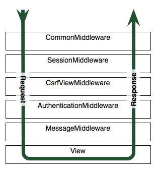

Tres métodos:
Django incopora casi todo lo necesario parala autentificación y registro de usuarios con:
| Está implantado como middleware, unas funciones añaden información al request interceptandolo antes y después la aplicación |  |
# settings.py
# -----------
MIDDLEWARE = [
'django.middleware.security.SecurityMiddleware',
'django.contrib.sessions.middleware.SessionMiddleware'
'django.middleware.common.CommonMiddleware',
'django.middleware.csrf.CsrfViewMiddleware',
'django.contrib.auth.middleware.AuthenticationMiddleware',
'django.contrib.messages.middleware.MessageMiddleware',
'django.middleware.clickjacking.XFrameOptionsMiddleware',
]
E incluso tiene un decorador para ponerlo en las vistas que requieran usuarios autenficados, que redirije automáticamente al formulario de login
from django.shortcuts import render
from django.contrib.auth import authenticate, login
def login_view(request): # no se puede llamar 'login' !¡ !¡
context = {}
usuario = request.POST.get ('username')
contraseña = request.POST.get ('password')
# Autenfificar, devuelve objeto usuario
user = authenticate (username=usuario, password=contraseña)
if user is not None and user.is_active:
login (request, user)
context['mensaje'] = 'Logeado como %s' % (usuario)
else:
context['mensaje'] = 'No usuario o contraseña incorrecta'
return render (request, 'login.html', context)
Una vez autentificado, el objeto usuario está disponible en las plantillas:
<ul>
{% if user.is_authenticated %}
<li> Logeado como {{ user.username }}</li>
<li><a href="{% url 'auth_logout' %}"> Logout </a></li>
{% else %}
<li><a href="{% url 'auth_login' %}"> Login </a></li>
{% endif %}
</ul>
Django proporciona un backend, que incluye todos los formularios y vistas necesarios para el login, logout, registro, cambio de contraseña, etc, que se puede personalizar, por ejemplo extendiendo el user model
De lectura/escritura sobre las clases del model de los gupos de usuarios
django-allauth incluye autentificación delegada en redes sociales
Django tiene previsto el registro de eventos logging basado en el de python.
Para registro centralizado de aplicaciones grandes está ELK
Django tiene un dispatcher de signals para comunicar unas partes con otras de la aplicación, que funciona con emisores y receptores que se subscriben a los emisores